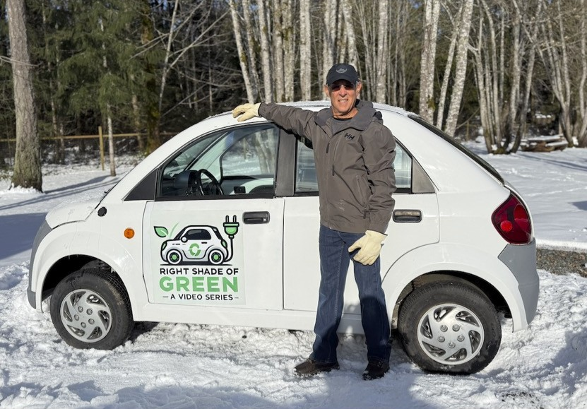

Dynasty IT
This Kelowna-built Neighbourhood Zero Emission Vehicle was manufactured in 2001. It was a couple of decades ahead of the Canadian curve and in 2008 the design was sold to a Pakistani company where it's still produced today.
Established low-speed vehicle manufacturers in Asia are expanding through CKD completely knocked down assembly plants. With approvals, Vancouver Island could have a plant up and running in 18 months, creating local jobs and new opportunity. Canada's more than 3,500 municipalities would be the target market, and these vehicles could also launch community car share programs. But BC needs a NZEV pilot to start the process.
Canada is entering the golden age of EVs! As new global competitors enter the market, costs will begin coming down, and the road ahead looks brighter than ever.
Dave Haberman
